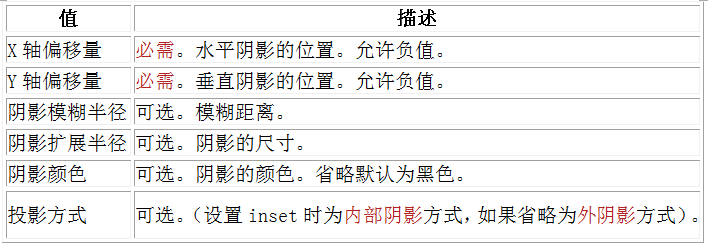

3.为边框应用图片 border-image
语法为：

使用下图做边框。可以为我们展示出三种不同的边框图片效果区别

平铺 repeat
环绕 round
拉伸 stretch
圆角属性为border-radius，有4个值，对应的方向为左上，右上，右下，左下
box-shadow:增加阴影，支持一个或者多个
 注意：inset 可以写在参数的第一个或最后一个，其它位置是无效的。 注意：X轴偏移和Y轴偏移可以设置负数
.box_shadow{
box-shadow:4px 2px 6px #333333;
}
.box_shadow{
box-shadow:4px 2px 6px #333333 inset;
}
.box_shadow{
box-shadow:4px 2px 6px #f00, -4px -2px 6px #000, 0px 0px 12px 5px #33CC00 inset;
}
 *径向渐变将to改为at
*径向渐变将to改为at


text-overflow:ellipsis;
overflow:hidden;
white-space:nowrap;

@font-face{
font-family:字体名称；
src:字体文件在服务器上的路径。
}
p{
font-size:12px;
font-family:"my font";
/*必须项，设置@font-face中的font-family同样的值*/
}
text-shadow:X-offset Y-offset blur color;
X-Offset：表示阴影的水平偏移距离，其值为正值时阴影向右偏移，反之向左偏移；
Y-Offset：是指阴影的垂直偏移距离，如果其值是正值时，阴影向下偏移，反之向上偏移；
Blur：是指阴影的模糊程度，其值不能是负值，如果值越大，阴影越模糊，反之阴影越清晰，如果不需要阴影模糊可以将Blur值设置为0；
Color：是指阴影的颜色，其可以使用rgba色。
文本阴影text-shadow
text-shadow:1px 2px 1px red;
设置背景元素图片的原始起始位置
语法：
background-origin:border-box/padding-box/content-box